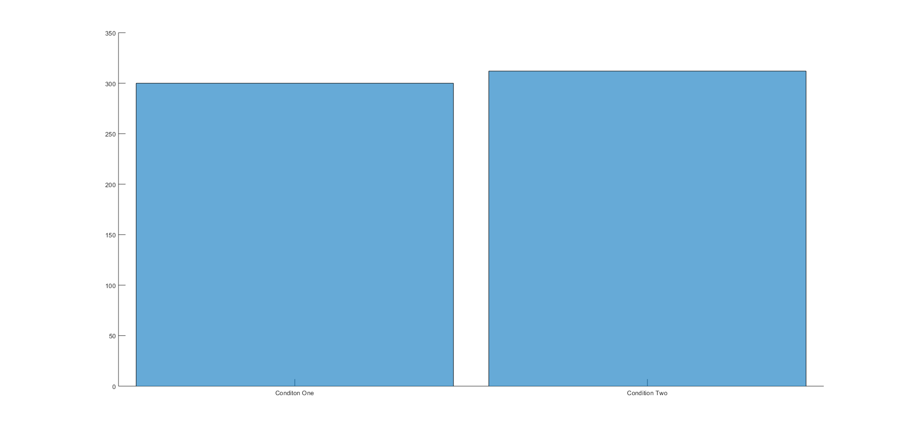
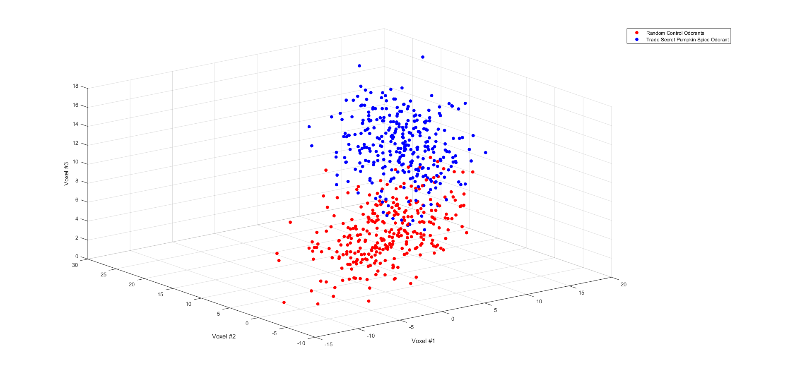
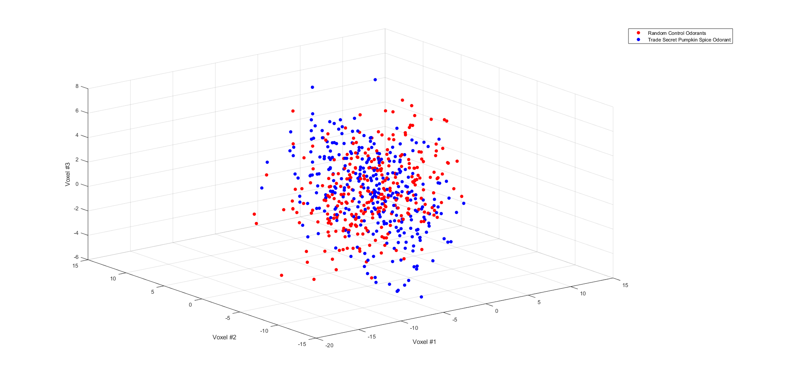
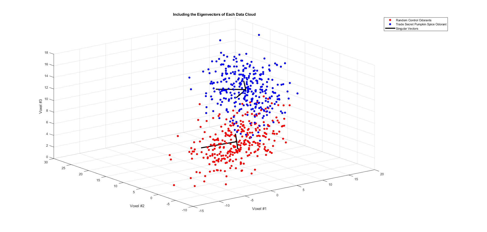
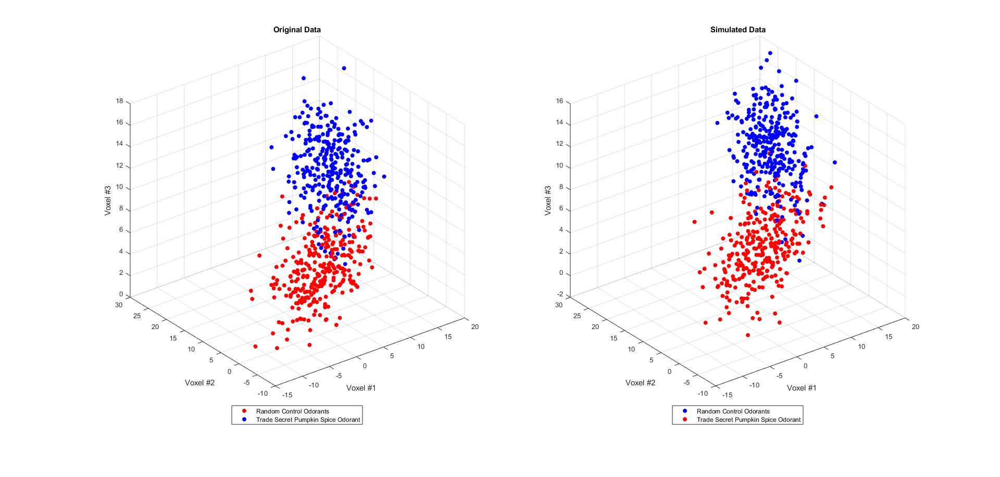

Contents
HW # 4 - Question 4 - Math Tools - Matthew DeVerna
clear all close all
Question 4: Analyzing and Simulating Experimental Data
An international coffee conglomerate recruits you to characterize the neuropsychology underlying their customers' adoration of pumpkin spice. You devise a BOLD fMRI pilot experiment in which you present one of two classes of odorants to an individual while monitoring the activity of three key voxels located in the amygdala, an structure known to be associate with emotional responses.
% The file 'experimentData.mat' contains: % 'data' = (N x 3) matrix % ROWS = BOLD response of the three voxels on a given trial (relative to baseline) % 'trialConds' = (N x 1) vector indicating the experimental condition of each trial. % Condition 1 = random control odorants % Condition 2 = trade secret pumpkin spice odorant load('experimentData.mat')
(A) Visualize the Data
Determine how many trials of each trial condition were completed - display this information in a 2-bin histogram. bins = condition height = trial counts
figure; hold on; control_responses = data(trialConds == 1, :) ; spice_responses = data(trialConds == 2, :) ; cats = categorical({'Conditon One', 'Condition Two'}) ; histogram('Categories', cats, 'BinCounts', [length(control_responses),length(spice_responses)]) ; % Plot a 3-d scatter plot of the recorded responses, with each point % color-coded according to its associated trial condition (use scatter3()) % [DONT FORGET TO LABEL AXES] figure ; scatter3(data(trialConds == 1,1), ... data(trialConds == 1,2), ... data(trialConds == 1,3), ... 'r', 'filled') hold on scatter3(data(trialConds == 2,1), ... data(trialConds == 2,2), ... data(trialConds == 2,3), ... 'b', 'filled') xlabel('Voxel #1') ylabel('Voxel #2') zlabel('Voxel #3') legend('Random Control Odorants', ... 'Trade Secret Pumpkin Spice Odorant', ... "Location", ... 'northeastoutside') % Describe your data QUALITATIVELY using this figure. % Is there a noticeable difference between the two trial conditions? % It looks like secret pumpking spice odorant really gets those neurons % going. Generally speaking, there seems to be higher voxel responses from % the pumpkin spice odorant - when compared to the control. % Yes, as I mentioned above, there certainly seems to be group clustering % between conditions, with the pumpking spice condition elliciting higher % repsonses. % What geometric shape are these "response clouds", and what distribution % would you use to model them? 
(B) Quantify the response statistics of each individual trial condition
Calculate the means of each response cloud, as well as their respective covariance matrices of each response cloud using matrix multiplication [REMEMBER TO CENTER THE DATA FIRST].
% Find Mean control_mean = mean(control_responses) ; spice_mean = mean(spice_responses) ; % Subtract this away to center data so we can find the covariance matrix % using svd() centered_control = control_responses - control_mean ; centered_spice = spice_responses - spice_mean ; % Plot the data to get a visual double check it is centered figure ; scatter3(centered_control(:,1), ... centered_control(:,2), ... centered_control(:,3), ... 'r', 'filled') hold on scatter3(centered_spice(:,1), ... centered_spice(:,2), ... centered_spice(:,3), ... 'b', 'filled') xlabel('Voxel #1') ylabel('Voxel #2') zlabel('Voxel #3') legend('Random Control Odorants', ... 'Trade Secret Pumpkin Spice Odorant', ... "Location", ... 'northeastoutside') % Looks good, lets find the covariance matrix now... control_cov = centered_control'*centered_control/ (length(centered_control)-1) ; spice_cov = centered_spice'*centered_spice/ (length(centered_spice)-1) ; mLabControl = cov(centered_control) ; mLabSpice = cov(centered_spice) ; % Verify your calculation is correct by comparing with the output given by % the cov() function. CheckControlCov = isequal(round(control_cov,6),round(mLabControl,6)) CheckSpiceCov = isequal(round(spice_cov,6),round(mLabSpice,6)) % How do the covariance matrices compare (are they similar at all or wildly % different? % These are damn close so we can say that our function is working. They % will never be exactly the same b/c it is based off of a sampled % distribution.
CheckControlCov = logical 1 CheckSpiceCov = logical 1
(C) Next, Compute the SVD of Each Covariance Matrix
Plot the three singular vectors originating from the center of each response cloud and scale their amplitude by the square root of the singular values.
% Decompose with SVD [Uc, Sc, Vc] = svd(control_cov) ; [Us, Ss, Vs] = svd(spice_cov) ; % Take sqrt of diagonal elements to scale the singular vectors ScScale = sqrt(diag(Sc)) ; SsScale = sqrt(diag(Ss)) ; % Scale by the right singular vectors control_singVecScaled = Vc.* ScScale ; spice_singVecScaled = Vs.* SsScale ; % B/c we are plotting on the actual data, and we took the svd of the % centered data, we now need to "shift" these scaled singular vectors so % that they are no longer centered, and will represent the actual data. control_singVecScaled = control_singVecScaled + control_mean ; spice_singVecScaled = spice_singVecScaled + spice_mean ; % Plot the data figure ; scatter3(data(trialConds == 1,1), ... data(trialConds == 1,2), ... data(trialConds == 1,3), ... 'r', 'filled') hold on grid on scatter3(data(trialConds == 2,1), ... data(trialConds == 2,2), ... data(trialConds == 2,3), ... 'b', 'filled') xlabel('Voxel #1') ylabel('Voxel #2') zlabel('Voxel #3') plot3([control_mean(1),control_singVecScaled(1,1)], ... [control_mean(2),control_singVecScaled(1,2)], ... [control_mean(3),control_singVecScaled(1,3)], ... 'LineWidth', 3, 'Color', 'k') hold on plot3([spice_mean(1),spice_singVecScaled(1,1)], ... [spice_mean(2),spice_singVecScaled(1,2)], ... [spice_mean(3),spice_singVecScaled(1,3)], ... 'LineWidth', 3, 'Color', 'k') plot3([control_mean(1),control_singVecScaled(2,1)], ... [control_mean(2),control_singVecScaled(2,2)], ... [control_mean(3),control_singVecScaled(2,3)], ... 'LineWidth', 3, 'Color', 'k') plot3([spice_mean(1), spice_singVecScaled(2,1)], ... [spice_mean(2),spice_singVecScaled(2,2)], ... [spice_mean(3),spice_singVecScaled(2,3)], ... 'LineWidth', 3, 'Color', 'k') plot3([control_mean(1),control_singVecScaled(3,1)], ... [control_mean(2),control_singVecScaled(3,2)], ... [control_mean(3),control_singVecScaled(3,3)], ... 'LineWidth', 3, 'Color', 'k') plot3([spice_mean(1),spice_singVecScaled(3,1)], ... [spice_mean(2),spice_singVecScaled(3,2)], ... [spice_mean(3),spice_singVecScaled(3,3)], ... 'LineWidth', 3, 'Color', 'k') legend('Random Control Odorants', ... 'Trade Secret Pumpkin Spice Odorant', ... 'Singular Vectors', ... "Location", 'northeastoutside') title('Including the Eigenvectors of Each Data Cloud') % Relative to how similar the covariance matrices were before computing % their SVD, how do each trial condition's respective set of singular % values compare? % Calculate the length of each and compare them. singularValueDiff = diag(Sc) - diag(Ss) % Comparing the singular values we can see that they are nearly identical. % Describe what this tells us about the relationship between the three % voxels across conditions. We can say that these two different ellipsoid % clouds of data have the same amount of variance on each of these basis % axes.
singularValueDiff =
0.8649
0.6408
-0.5199
 (D) Validating the Model with Data Simulation
A powerful method to validate a model is by generating (i.e. simulating) new data matching your quantitative description of the real data, and then comparing them with real data.
% Create a function 'simResponses = odorExperiment(numTrials, numTrials2) % numTrials 1 and numTrials2 = # of trials in a simulated experiment for % conditions 1 and 2, respectively. % simResponses = a (N x 3) matrix containing simulated responses of each % of your 3 voxels during N = numTrials 1 + numTrials2 trials. % [HINT: USE 'ndRand()' FROM THE PREVIOUS PROBLEM] % mu and cov Data pasted below control_mean = [2.9771, 4.2488, 4.9744] ; spice_mean = [9.9819, 12.0838, 11.0741] ; control_cov = [26.1315, 9.8203, 4.9087;... 9.8203, 15.7457, 3.4075; ... 4.9087 3.4075 3.3829] ; spice_cov = [12.9038, 8.0973, 2.9106;... 8.0973, 26.9454, 6.3192;... 2.9106, 6.3192, 4.4251] ; numt1 = 300 ; numt2 = 312 ; simulated_data = odorExperiment(numt1,numt2) ; % Plot the simiulated and real responses in the same figure (use subplots % if you wish) to compare the two. subplot(1,2,1) scatter3(data(trialConds == 1,1), ... data(trialConds == 1,2), ... data(trialConds == 1,3), ... 'r', 'filled') hold on scatter3(data(trialConds == 2,1), ... data(trialConds == 2,2), ... data(trialConds == 2,3), ... 'b', 'filled') xlabel('Voxel #1') ylabel('Voxel #2') zlabel('Voxel #3') legend('Random Control Odorants', ... 'Trade Secret Pumpkin Spice Odorant', ... "Location", ... 'southoutside') title('Original Data') subplot(1,2,2) scatter3(simulated_data((numt1+1:end),1), ... simulated_data((numt1+1:end),2), ... simulated_data((numt1+1:end),3), 'b', 'filled') hold on scatter3(simulated_data((1:numt1),1), ... simulated_data((1:numt1),2), ... simulated_data((1:numt1),3), 'r', 'filled') xlabel('Voxel #1') ylabel('Voxel #2') zlabel('Voxel #3') legend('Random Control Odorants', ... 'Trade Secret Pumpkin Spice Odorant', ... "Location", ... 'southoutside') title('Simulated Data') % Is your simulated response data a good characterization of the real % amygdala voxel responses? % We can see that visually these distributions look quite similar, but will % never look exactly the same. Thus, we would conclude that this is a good % characterization of the vozel responses that we measured. For good % measure, I have calculated the mean and cov of each to eye. mean(simulated_data((numt1+1):end,:)) mean(simulated_data((1:numt1):end,:)) cov(simulated_data((numt1+1):end,:)) cov(simulated_data((1:numt1):end,:))
control_cov =
26.1315 9.8203 4.9087
9.8203 15.7457 3.4075
4.9087 3.4075 3.3829
spice_cov =
12.9038 8.0973 2.9106
8.0973 26.9454 6.3192
2.9106 6.3192 4.4251
ans =
10.2365 12.4675 11.0224
ans =
6.6550 8.2977 8.0342
ans =
11.8478 9.2371 2.5807
9.2371 27.5485 5.6737
2.5807 5.6737 3.8455
ans =
31.9852 24.5278 15.2093
24.5278 39.7640 17.5194
15.2093 17.5194 13.1235
